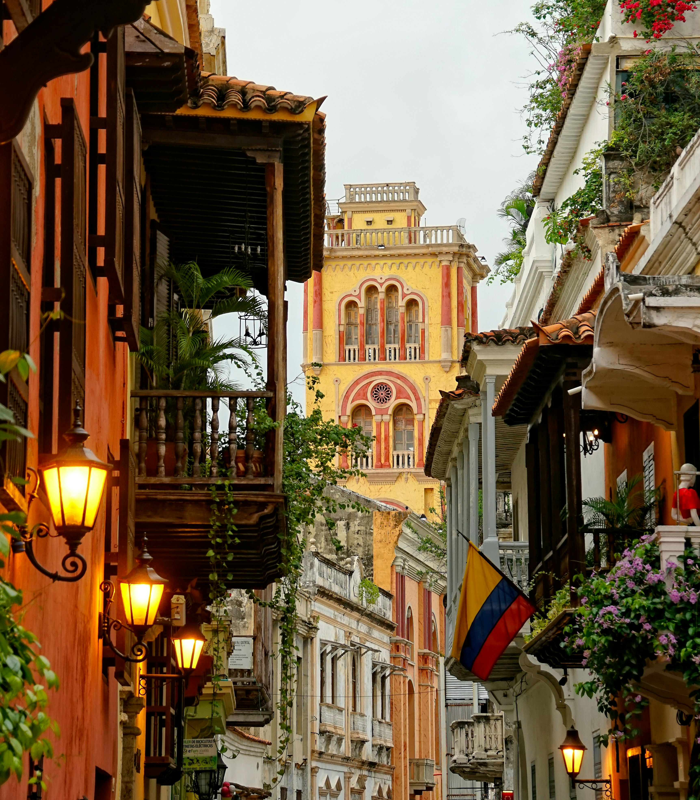
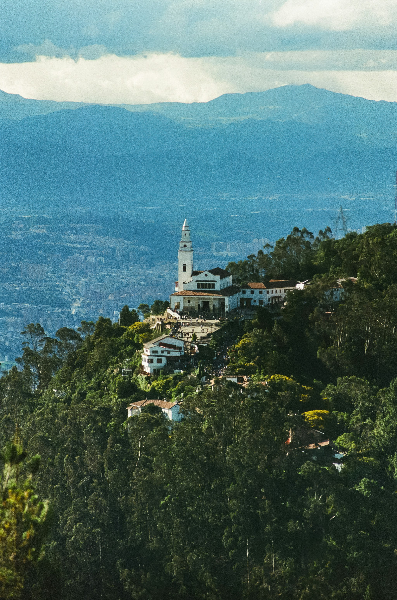

four journeys
structured in time
Each route is a sequence of encounters, timed to unfold at the right pace. Follow them precisely or let them guide you loosely — both are valid.
Colonial Coast
Cartagena de Indias holds its history in stone, in the angle of the afternoon light on the walls, in the width of the streets that once moved traders and enslaved people and soldiers in the same directions. This two-day route moves through the city's layers — from the ceremonial centre to the water's edge — before opening onto the coral archipelago offshore.
Torre del Reloj
Arrive at the clock tower — the main gate to the walled city — and take twenty minutes to orient yourself on the plaza before entering the historic centre. The tower frames the transition between the city and its colonial interior.
Centro Histórico
Walk through Plaza de Bolívar and the merchant streets of the Old City. The architecture moves between the ecclesiastical and the commercial — churches and convents beside merchant houses and arcaded passages. Allow two hours to move slowly and without agenda.

Lunch in Getsemaní
Cross through the inner gate to Getsemaní, the neighbourhood that held the population excluded from the historic centre — Afro-Colombian workers, artisans, freed people. Eat at a neighbourhood restaurant and walk the mural-covered streets before afternoon.
Castillo de San Felipe de Barajas
The largest Spanish fortress ever constructed in the Americas rises above the city on the Cerro de San Lázaro. The tunnel systems, ramps, and ramparts were designed to amplify sound — any movement in the tunnels could be heard throughout. Two hours here is the minimum; bring water.
Sunset walk, city walls
Walk the top of the city walls at sunset. The light turns the stone warm and the Caribbean appears at the western edge. The walk takes forty minutes at a slow pace; the vendors, the couples, and the light are all part of the encounter.
Boat to Islas del Rosario
Depart from the Muelle de los Pegasos at 9:00 AM. The crossing takes forty-five minutes through open Caribbean water. The islands appear as a low green line before the coral becomes visible beneath the hull.
Snorkelling & Bocagrande
Snorkel over the Rosario coral reef in the morning — the water is clearest before noon. Return to the mainland by 3:00 PM for a late afternoon at Bocagrande beach, where the contemporary city meets the waterfront in a different register entirely.
Coffee & Cloud Forest
The Eje Cafetero is a landscape of cultivation — of slopes shaped by generations of farmers who learned to read altitude, humidity, and shade. This three-day route moves through the full range of the coffee territory: from the cupping table of a traditional finca to the cloud forest of the Cocora valley to the volcanic viewpoints above Manizales.
Armenia — coffee welcome
Arrive at El Edén Airport, Armenia. A brief orientation at the city's central market before transferring to the first finca. The market provides the first sensory context: the smell of coffee, the weight of yuca and plantain, the sound of the place at its daily rhythm.
Traditional finca tour & cupping
Walk the finca with a farmer through the full coffee cycle — from the nursery beds where seedlings are cultivated to the raised drying beds where the parchment coffee dries in the sun. The cupping session that follows makes the process immediate: three coffees from three elevations, each distinct in character.
Salento — town square
Arrive in Salento as the afternoon light softens. Walk the main street — Calle Real — past the painted wooden balconies to the viewpoint above the town. The valley opens below in the last light of the day. Dinner at a local trout restaurant before settling in for the night.
Valle de Cocora hike
Take a chiva jeep from Salento's main square to the Cocora valley. The circular hike passes through cloud forest — crossing wooden bridges, ascending to a hummingbird reserve, and emerging into the high valley where wax palms rise 40–60 metres from the mist. Allow four to five hours for the full circuit. The silence here is specific and unhurried.

Quindío Botanical Garden
The botanical garden holds 2,000 plant species in a preserved fragment of the Andean forest corridor. The butterfly house and the bromeliad collection provide a slower, more contemplative counterpoint to the morning's hike. Close at dusk.
Manizales cable car panorama
Manizales sits on a ridge with views across the coffee landscape in every direction. The urban cable car crosses the city from the central district to the hillside neighbourhoods — a perspective on the city's vertical character and the agricultural landscape that surrounds it.
Los Nevados viewpoint
Drive to the Nevado del Ruiz national park entrance. The volcanic landscape at 4,000+ metres is cold, spare, and unlike anything at lower altitudes — a territory of frailejones, volcanic ash fields, and permanent snowfields on the peaks above. The viewpoint over the Nevado del Ruiz glacier provides a rare encounter with Colombia's high Andean interior.
Thermal hot springs
Descend from the volcanic zone to the thermal springs on the slopes below — pools of geothermally heated water in a forested canyon setting. After two days of walking, the thermal pools provide a deliberate, unhurried close to the route.
Bogotá to Medellín: City Contrasts
Two Colombian cities, separated by 240 kilometres of Andean terrain and by a different history of making and remaking themselves. This three-day route moves through the institutional depth of Bogotá — museums, markets, altitude — before flying to Medellín and tracing its transformation from valley floor to hillside comunas, ending at the great rock above the reservoir.
Museo del Oro & La Candelaria
Begin in La Candelaria — Bogotá's colonial core — at the Museo del Oro. Allocate a full ninety minutes for the collection. The second floor — the offering room, where thousands of gold objects are displayed in near-darkness — is one of the singular museum experiences in South America.

Monserrate
Take the cable car from the station at the foot of the hill. The ascent takes eight minutes and rises 500 metres above the city. From the summit, the full extent of the Bogotá Sabana is visible — a grid of 8 million people at 2,600 metres, held by mountains on three sides.
Paloquemao market
Paloquemao is Bogotá's principal wholesale food market — an architecture of abundance that opens before dawn and closes by midday. In the afternoon, the flower section remains active. Walk it slowly; the scale and variety of Colombian produce is itself a geography lesson.
Usaquén artisan market & dinner
Usaquén is a former colonial municipality absorbed by the northward expansion of Bogotá — its central plaza and weekend market remain a neighbourhood apart. The Sunday artisan market is small and specific; the restaurants surrounding the plaza provide a close to the day that is quieter than the city centre.
Flight to Medellín
Depart El Dorado for José María Córdova airport. The flight takes fifty minutes and crosses the Central Cordillera — on clear days, the volcanic peaks of the Coffee Region are visible to the south. Transfer by bus or taxi to El Poblado.
Metrocable Line K & comunas
Take the Metro north to Acevedo station, then the Metrocable Line K uphill through the comunas. The cable passes over Santo Domingo and La Aurora — dense, vertical neighbourhoods built on the hillsides in the decades of migration and conflict. The ride is slow and deliberate; what it reveals is the full human geography of the city.
El Poblado lunch
Return down to El Poblado for lunch — the neighbourhood's restaurant density is the highest in the city, and the range from traditional bandeja paisa to contemporary Colombian cuisine provides clear choice. Take the afternoon to walk Parque Lleras and the surrounding streets.
Botero Plaza
Fernando Botero's sculptures fill the plaza adjacent to the Antioquia Museum — twenty-three bronze figures in the artist's distinctive volumetric style. The plaza is public, open, and unmediated. Botero donated the works to the city in 2000; they remain among the most visited public art installations in South America.
Bus to Guatapé
The bus departs Terminal del Norte at 8:30 AM and takes ninety minutes through the Andean foothills east of Medellín. The reservoir appears as the road descends — a vast blue expanse dotted with forested islands, created by the flooding of the original valley in the 1970s.
El Peñol — 740 steps
The ascent of El Peñol takes thirty to forty minutes via the staircase cut into the granite face. The summit at 200 metres above the reservoir offers a view across the full archipelago — islands, peninsulas, forested edges, and the distant Andean ridges. The climb is steady; the arrival is complete.
Guatapé town & zócalos
Walk through Guatapé town. Every building carries zócalos — painted relief panels on the lower exterior wall, each one depicting the history or character of the household. The town is small and can be walked in an hour. Return by bus to Medellín in the late afternoon.
Amazon Immersion
The Amazon does not perform. It proceeds at its own pace — the river rising and falling by season, the forest holding its light close, the animals moving on their own schedule without regard to visitors. This two-day route is a deliberate encounter with a territory that operates according to rules that are not human-made.
Leticia port — river orientation
Arrive at Leticia's Alfredo Vásquez Cobo Airport and transfer to the riverfront. The port in the early morning holds the working life of the Amazon: supply boats, fishing dugouts, border traders crossing between Colombia, Brazil, and Peru. Walk the waterfront for forty minutes before boarding.
Puerto Nariño — car-free village
Puerto Nariño has no motor vehicles. The village of 8,000 people moves on foot and by bicycle, its streets planned on a grid that opens toward the river. The market, the school, and the community centre are the civic anchors. Walk the village and eat lunch at a community restaurant before heading to the lagoon.
Tarapoto lagoon & pink river dolphins
Take a small motorised canoe into the Tarapoto lake system. The pink river dolphins — boto — are resident here year-round; their presence is not guaranteed but their habitat is reliably close. The boatman navigates to the areas of highest dolphin activity and cuts the motor. The lagoon holds its silence. Encounters are unhurried and observational.
Indigenous community visit
Visit a Tikuna community on the riverbank for an organised cultural exchange: traditional craft demonstration, explanation of plant medicine knowledge, and the community's own account of its history with the river and the forest. The exchange is managed by the community and proceeds on their terms.
Dawn jungle walk
Leave the lodge before full light with a naturalist guide. The first hour of the Amazon morning is its most active: spider monkeys in the canopy, toucans at the fruit trees, the forest floor still cool and dim. The guide reads the forest in a register that the unaccompanied visitor cannot access — the walk lasts two hours and covers approximately three kilometres.
Return to Leticia — river market
Return to Leticia by speedboat, arriving in time to visit the Mercado market before departure. The market operates across the Colombian-Brazilian border — vendors on both sides selling fish pulled from the Amazon that morning, tropical fruit, and goods that cross between legal regimes without friction. Departure flights leave in the afternoon.
All routes at a glance
Use this table to compare routes by duration, difficulty, and season before making your choice.
| Route | Duration | Difficulty | Transport | Best season | Highlights |
|---|---|---|---|---|---|
| Colonial Coast | 2 days · 7 stops | Easy | On foot · Boat | Dec – Apr | Walled city, Castillo de San Felipe, Islas del Rosario reef |
| Coffee & Cloud Forest | 3 days · 8 stops | Moderate | Car · On foot | Dec – Mar, Jul – Aug | Valle de Cocora hike, finca cupping, Los Nevados volcanic viewpoint |
| Bogotá to Medellín | 3 days · 9 stops | Easy–Moderate | Walking · Flight · Metro | Year-round | Museo del Oro, Metrocable comunas, El Peñol summit |
| Amazon Immersion | 2 days · 5 stops | Moderate | Boat · On foot | Jun – Nov | Pink river dolphins, Tikuna community, dawn jungle walk |